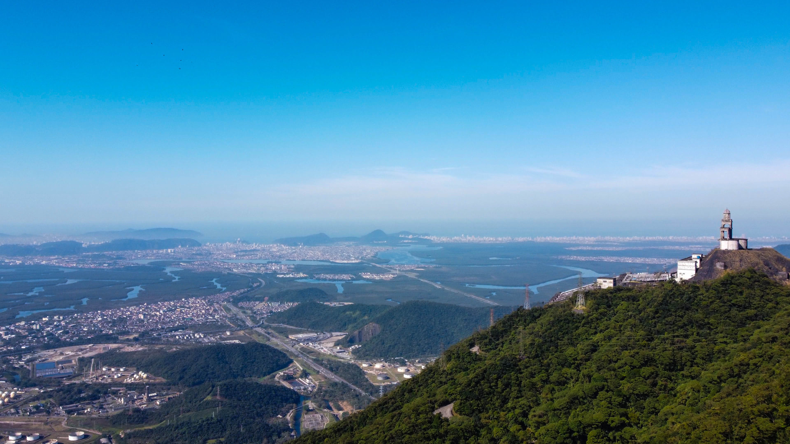
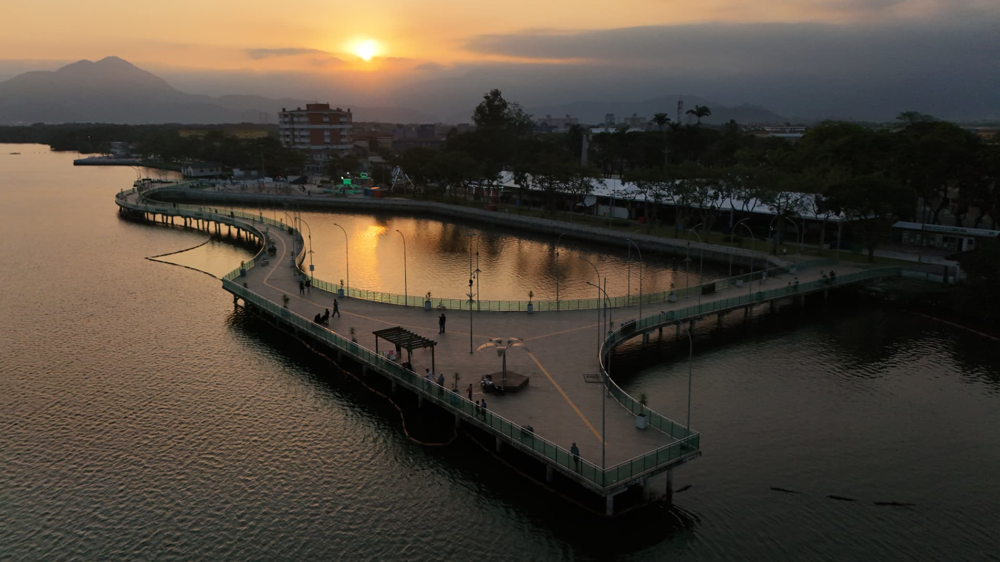

Cubatão é uma cidade marcada pela história, pela indústria e pela riqueza natural da Baixada Santista. Cercada pela Mata Atlântica e localizada entre a Serra do Mar e o litoral paulista, possui importantes áreas ambientais, patrimônios históricos e atrações que mostram a transformação e a importância da cidade para a região.
Conheça a história, a importância e as riquezas naturais e culturais que fazem Cubatão única.
Cubatão possui grande importância econômica para o estado de São Paulo por abrigar um dos principais polos industriais do país. Sua localização estratégica também contribui para o transporte de mercadorias e para as atividades ligadas ao Porto de Santos. Além disso, destaca-se pela recuperação ambiental e pela preservação da Mata Atlântica.
Cubatão está localizada no litoral do estado de São Paulo, na região da Baixada Santista, a aproximadamente 60 km da capital paulista. A cidade fica entre a Serra do Mar e a área estuarina, sendo cortada por importantes rios e cercada por áreas de Mata Atlântica.
Cubatão ficou conhecida internacionalmente pelos problemas ambientais enfrentados nas décadas de 1970 e 1980; Tornou-se referência em recuperação ambiental; Abriga a histórica Calçada do Lorena, caminho utilizado durante o período colonial para ligar o litoral ao planalto paulista.
Cubatão possui uma economia baseada principalmente na indústria, especialmente nos setores petroquímico, siderúrgico e químico. A cidade também se beneficia das atividades portuárias, do transporte de cargas e do comércio, gerando empregos e contribuindo para o desenvolvimento econômico da Baixada Santista.
Cubatão oferece atrações como o Parque Anilinas, o Parque Ecológico do Perequê e os monumentos históricos dos Caminhos do Mar. A cidade também possui trilhas, cachoeiras e áreas naturais, que permitem aos visitantes conhecer a história e as paisagens da região.
Cubatão possui extensas áreas de Mata Atlântica, manguezais, rios e vegetação de restinga. Esses ambientes abrigam diversas espécies de animais e plantas, contribuindo para a biodiversidade regional e para o equilíbrio ambiental da Baixada Santista.
Descubra alguns dos destinos que valem a visita em Cubatão.
| Localização | Atração | Indicação | Nota dos visitantes |
|---|---|---|---|
| Vale do Quilombo | Caminhos do Mar | História e ecoturismo | 9,2/10 |
| Região do Rio Perequê | Parque Ecológico do Perequê | Natureza e trilhas | 9,0/10 |
| Caminhos do Mar | Calçada do Lorena | História e arquitetura | 9,6/10 |
| Caminhos do Mar | Rancho da Maioridade | História e turismo | 9,4/10 |
| Região do Rio Perequê | Cachoeira Paraíso | Natureza e paisagens | 9,4/10 |
| Região do Rio Perequê | Cachoeira da Lagoa Azul | Natureza e ecoturismo | 9,6/10 |
| Centro | Teatro do Kaos | Cultura e apresentações | 9,2/10 |
| Centro | Igreja Matriz de Cubatão | Religião e história | 9,4/10 |
| Centro | Praça dos Emancipadores | Lazer e convivência | 8,0/10 |